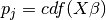

BinaryResults.
resid_pearson
Pearson residuals
Notes
Pearson residuals are defined to be
where  and is the total number of observations sharing the covariate pattern .
For now is always set to 1.
statsmodels.discrete.discrete_model.BinaryResults.resid_dev
statsmodels.discrete.discrete_model.BinaryResults.resid_response
Enter search terms or a module, class or function name.
 is the total number of
observations sharing the covariate pattern . is always set to 1.
is the total number of
observations sharing the covariate pattern . is always set to 1.